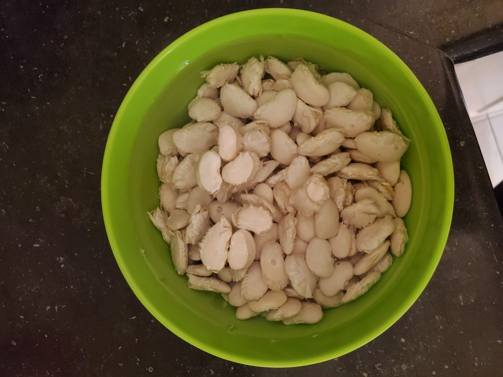
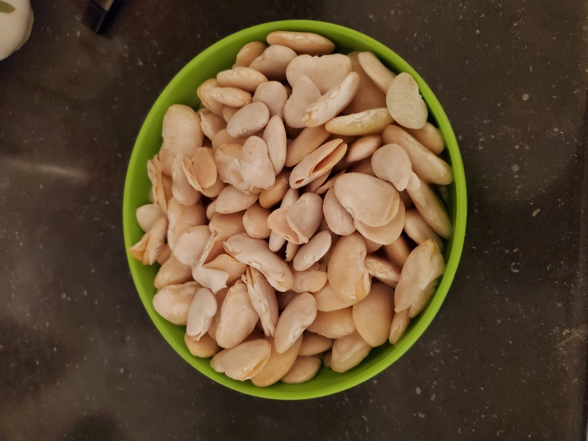
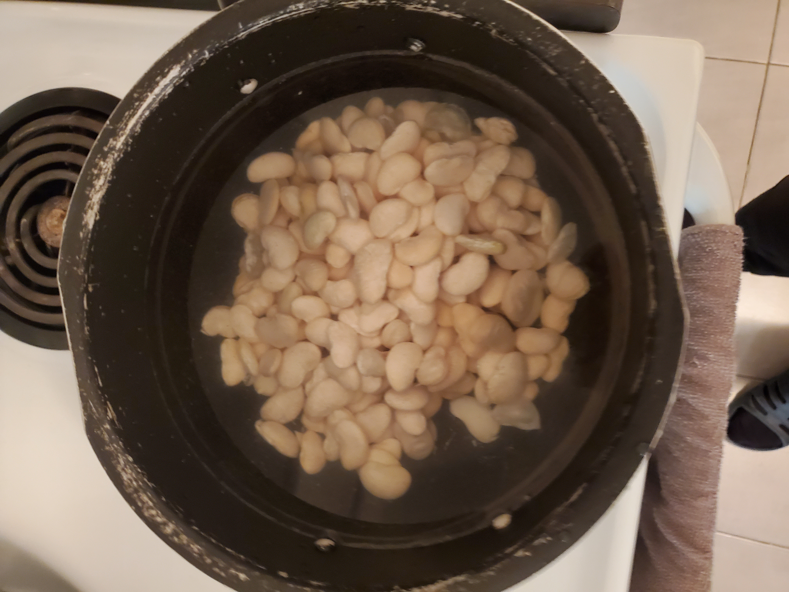
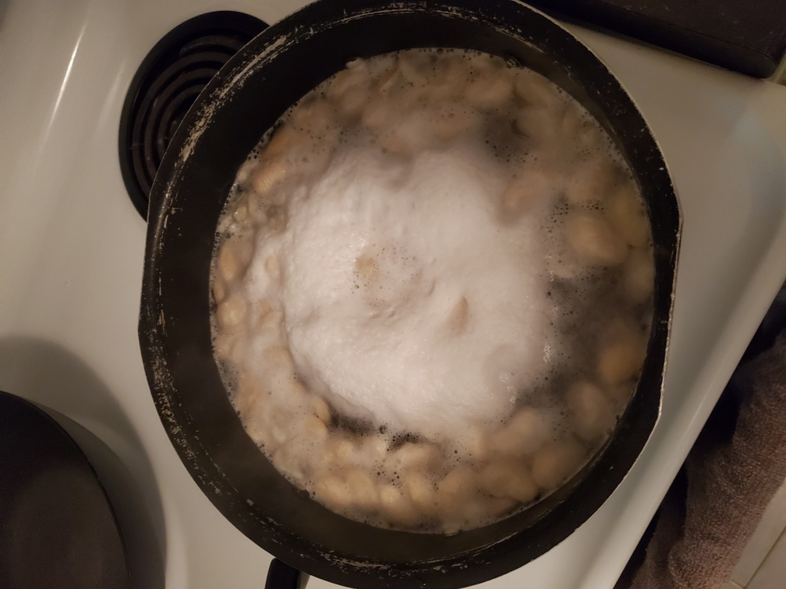

Put kidney beans in water overnight so they soak in the water and become larger in size.
 Place the kidney beans into the bottom of a large pot and cover with water. Bring beans to a boil.
When beans boil, a layer of foam forms on the surface of the water. This will not affect your beans' flavor or quality in any way, so you can just ignore it. However, I prefer to remove it with a regular spoon.
